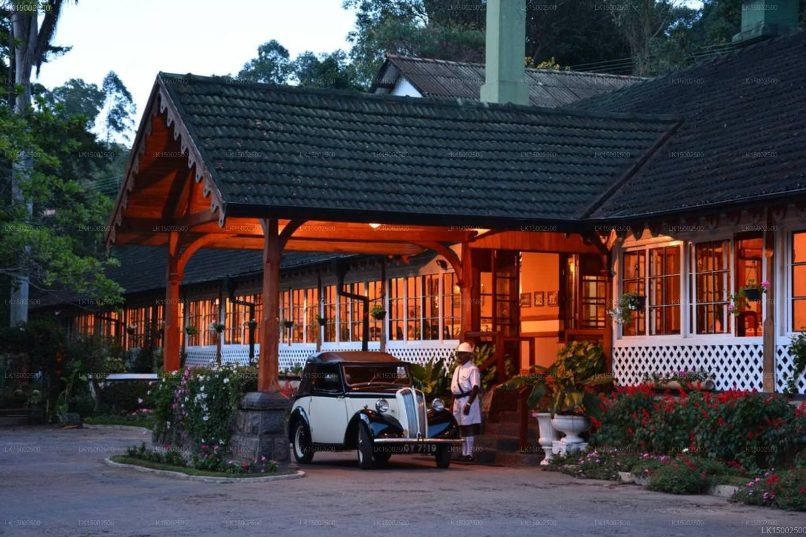
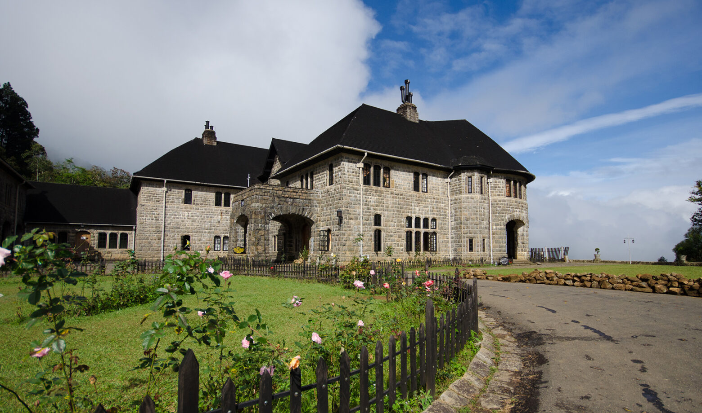
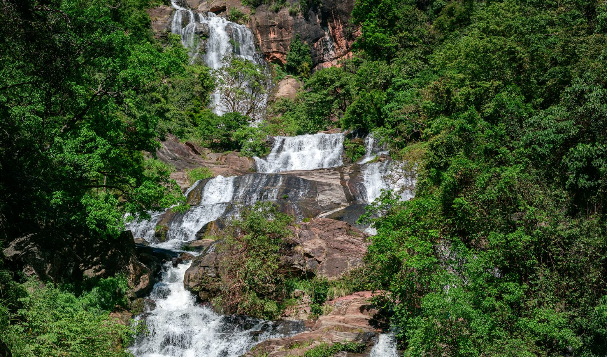
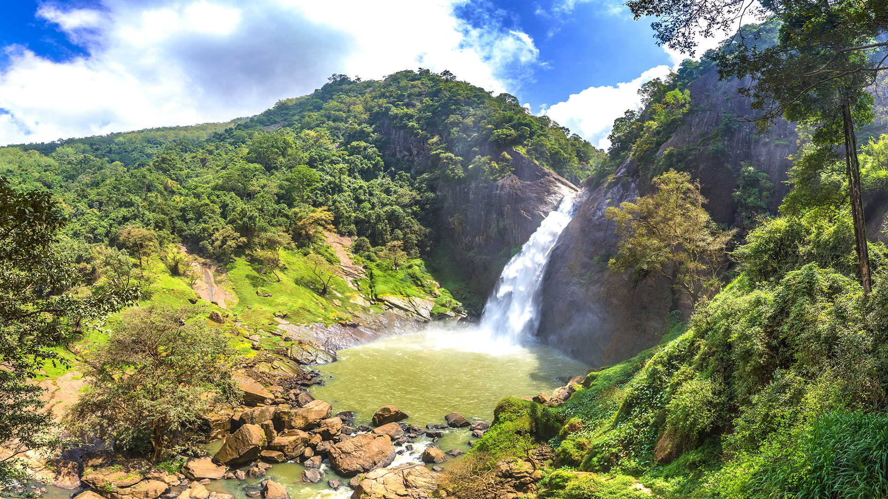
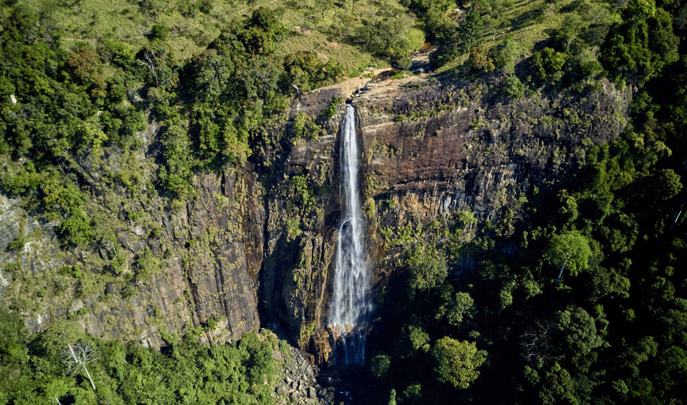
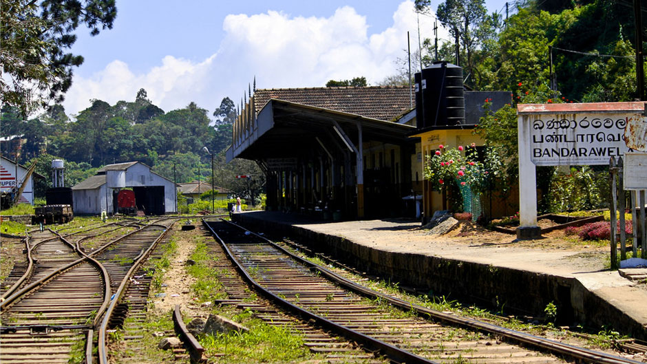

Experience the unique climate, colonial tea heritage, and vibrant Uva culture of Sri Lanka's most pristine mountain town.
Explore Spatial DataNestled at an elevation of 1,230 meters, Bandarawela boasts a unique, mild, and relatively dry climate. During the colonial era, the British established the town as an exclusive health resort and sanatorium to escape the tropical heat.
Today, the town is a thriving hub surrounded by lush, world-renowned tea plantations and breathtaking waterfalls.

A visual journey through our landscapes.





The defining characteristics of our mountain town.
Renowned for its mild, healing climate. Surrounded by lush tea estates that have driven the local economy.
A vital hub on the upcountry railway line, renowned for its scenic train rides connecting Colombo to Badulla.
Access our interactive Geo-Portal to map local resources, topography, and municipal boundaries.
Experience the traditions, festivals, and daily life of Bandarawela.
Annual cultural processions featuring traditional Kandyan dancers, drummers, and illuminated parades.
A bustling weekly event where villagers and farmers gather to trade fresh highland produce and crafts.
Bandarawela's estimated population evolution over the decades.
Connect with residents, ask questions about Bandarawela's development plans, or share your spatial data insights.
Connect with residents, ask questions about Bandarawela's development plans, or share your spatial data insights.